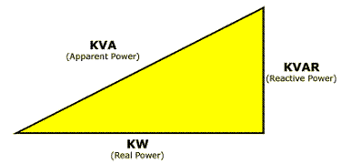

The importance of the power factor lies in the fact that electricity providers supply customers with volt-amperes, but bill them for watts.
Power factors below 1.0 require an electricity provider to generate more than the minimum volt-amperes necessary to supply the real power (watts). Since this increases the electricity provider’s generation and transmission costs, they may charge additional costs to customers who have a power factor below some limit.
In other words, most electric billing is done in kilowatt-hours, which is determined by the following equation:
Kilowatt-hours = (Volts * Amperes) * power factor * run time
If we assume that the run time, volts, and kilowatt-hours are constant, then as the power factor decreases the amperage must rise to compensate. The converse is also true, if the power factor is raised for a load, then the amperage is reduced.
For this reason, by adjusting the power factor of a system to very near unity, you ONLY pay for the power that you use.
A good power factor is considered to be greater than 0.85.
To understand the power factor is more detail, it is necessary to know that the following three types of power are used to describe energy flow in an alternating current (A.C.) electrical system:
The power factor of an alternating current (A.C.) electrical system is simply the ratio of the real power to the apparent power and is a number between 0 and 1.
The following ‘power triangle’ describes the relationship between these three types of power:

Therefore, from this power triangle the following can be seen:
This reactive power element can be generated by:
It is often possible to adjust the power factor of a system to very near unity. This practice is known as power factor correction and is achieved by switching in or out banks of inductors or capacitors. For example the inductive effect of motor loads may be offset by locally connected capacitors and vice verse.
For further details, see:
Wikipedia, Power factor, http://en.wikipedia.org/wiki/Power_factor (as of May. 28, 2007)
Wikipedia, Power factor correction, http://en.wikipedia.org/wiki/Power_factor_correction (as of May. 28, 2007).